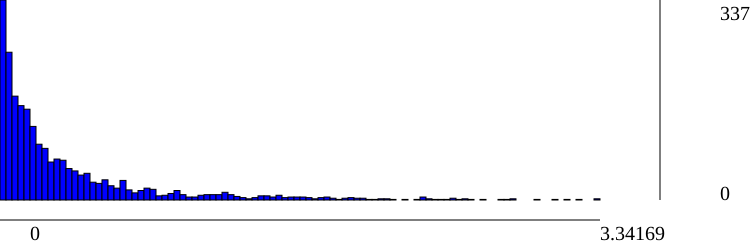

| IdView | Basename | #Observations | Residuals min | Residuals median | Residuals mean | Residuals max |
| 240788223 | ex5_8 | |||||
| 263704130 | ex5_16 | |||||
| 327837308 | ex5_0 | |||||
| 342196849 | ex5_12 | 479 | 9.18236e-05 | 0.203332 | 0.389564 | 3.32955 |
| 362832386 | ex5_3 | 50 | 0.000107266 | 0.112908 | 0.159128 | 0.680739 |
| 395353756 | ex5_15 | |||||
| 526676255 | ex5_7 | |||||
| 647587664 | ex5_2 | |||||
| 738448197 | ex5_4 | 109 | 0.00205262 | 0.14609 | 0.216191 | 2.03752 |
| 759368925 | ex5_6 | |||||
| 794848845 | ex5_9 | |||||
| 874908085 | ex5_13 | |||||
| 1390762317 | ex5_10 | |||||
| 1421978266 | ex5_14 | |||||
| 1443957691 | ex5_11 | 496 | 1.82341e-05 | 0.181088 | 0.393571 | 3.34169 |
| 1928372167 | ex5_5 | |||||
| 2147306674 | ex5_1 |
